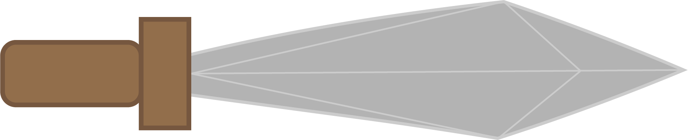
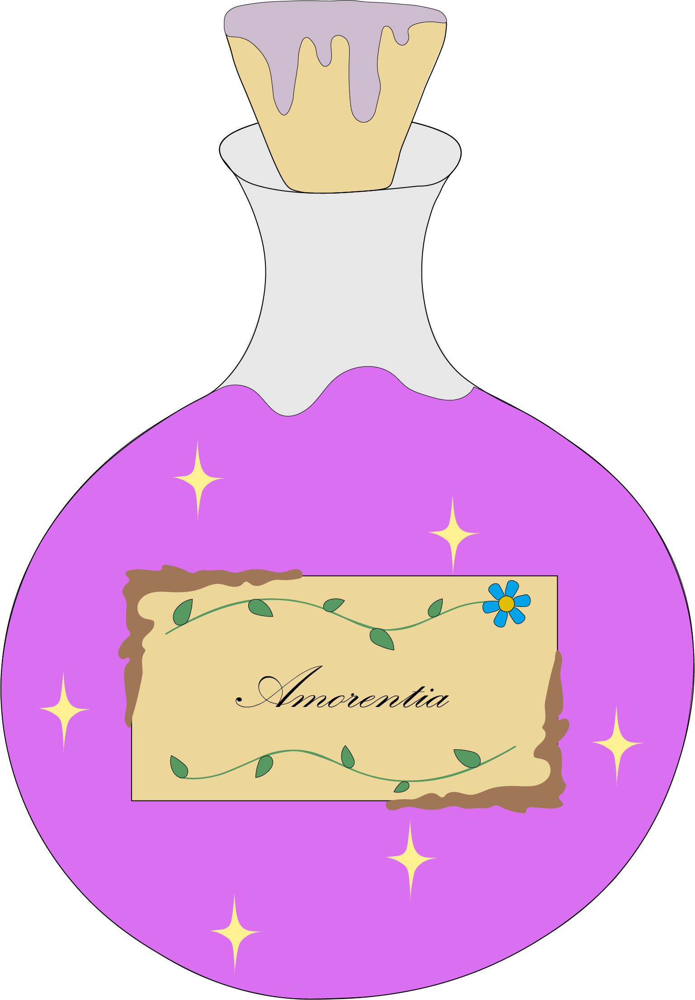
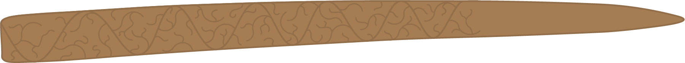

Billetter
Vi tilbyder to forskellige billettyper til en magisk tur i skoven. Begge billetter giver selvfølgelig adgang til skoven. Du har mulighed for at deltage i alle aktiviteter på begge billetter, så længe du husker at tilmelde dig.

En weekend med gamle kunster, eliksirer og fortællinger ved bålet
18.–20. juni · Dybt inde i skoven
Dybt inde bag de gamle egetræer, hvor stierne forsvinder og tågen hænger lavt, ligger Den Glemte Skov. Her bliver urter til eliksirer, rødder til festmåltider og ord til fortællinger, der lever videre ved bålet.

Vi tilbyder to forskellige billettyper til en magisk tur i skoven. Begge billetter giver selvfølgelig adgang til skoven. Du har mulighed for at deltage i alle aktiviteter på begge billetter, så længe du husker at tilmelde dig.

Vælg den billet, der passer til dit eventyr.
Adgang til skoven og alle workshops
249 kr.
Hele weekenden, alle workshops og aftenbål
599 kr.
Vi har en masse aktiviteter til weekenden. Du kan finde vores program her.

Vi har samlet de vigtigste programpunkter til dig her